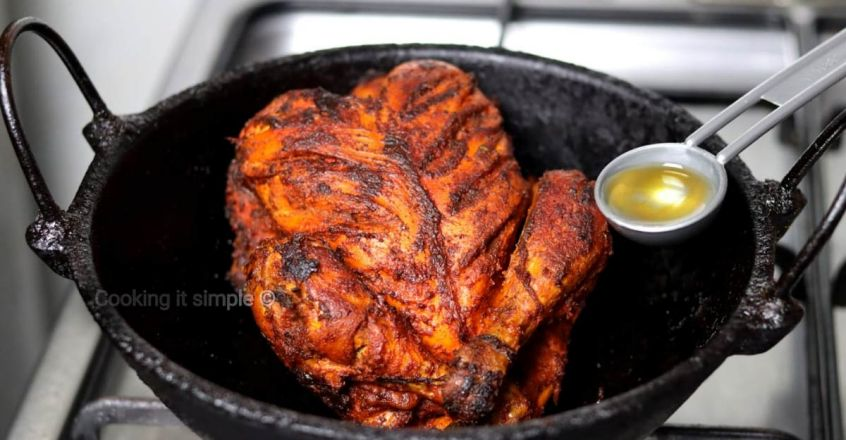

CHINESES DEEP FRIED CHICKEN
This is Chinese Sweet and sour chicken, One thing I should say is that this isn't a copycat recipe. I know sesame chicken is popular at Chinese takeout restaurants in the US, but it's not something we really see on Chinese menus in the UK. I've never tasted the Ugandan version, so I can't say it tastes anything like it.

Back to my Books